Using Couchbase Server to Build a User Profile Store
Overview
This tutorial contains seven main sections:
-
What is a User Profile Store? If you’re new to user profile stores, this section discusses the how and why.
-
Installing Couchbase Start here if you’ve never setup Couchbase before.
-
How to Create a Simple User Profile Store Once you have a Couchbase Cluster set up, this tutorial will show how get started.
-
Querying the Database. In contrast to many other NoSQL database options, Couchbase has unique capabilities for querying and exploring your data.
-
Searching Users with Full-Text Search You don’t need to push all your data to a third party tool just to implement an advanced search in your system. With CB FTS you can implement complex string matchings on natural-language texts directly from database.
-
Storing User Events Storing events is essential to understand how users behave, in this section we will discuss one strategy to maximize the write/read throughput of your application.
-
How to configure Cross Data Center Replication (XDCR) In this section, we will show how to replicate your database in multiple datacenters.
What is a User Profile Store?
One of the most common paradigms in software architecture is to centralize the code responsible for managing user’s data. With the increasing popularity of microservices, software architects started to create a single service to consolidate this task which is commonly referred to as a User Profile Store.
What is stored in a User Profile Store?
Any user-related data. The most common data stored in a User Profile Store are the user’s name, login, password, addresses, preferences, security roles, security groups, etc.
Some more examples of data you might put in according to your use cases:
-
Orders (for ecommerce);
-
User’s events
-
Medical history (for HealthCare);
-
Transactions history (for Finance);
-
Grades, certifications (for Education);
-
Contracts, insurance policies;
Why Couchbase is a good choice for a User Profile Store?
In the majority of the systems, the user is quite often the most frequently accessed data, as it underpins many other applications within organizations. Consequently, this part of the software should be carefully designed, as it will potentially impact the performance of the whole system.
Some of the key non-functional requirements of a successful system are:
-
Strong Consistency: Operations by key are strong consistent, so you won’t get outdated data.
-
High read and write throughput: Couchbase Server has a memory-first architecture. Data can be retrieved with very low latency and writes are asynchronous by default.
-
Caching: Frequently accessed data is automatically cached, as Couchbase has a managed cache on top of the database
-
A flexible data model: User data can vary a lot depending on the needs of different roles, levels, etc.
-
Easy and fast querying: with N1QL you can query all your data with a powerful implementation of SQL++. In addition, you can also keep your indexes in memory with Memory Optimized Indexes (MOI)
-
Natural-Language matching: with FTS you can easily implement advanced searches on natural-language texts.
-
High Scalability: Couchbase make it easy to scale horizontally, but it makes it easy to scale individual services vertically with multi-dimensional scaling (MDS)
-
High Availability: No single point of failure. Data can also be located in one or multiple data centers (XDCR).
User Profile Store Step-by-step
The rest of ths tutorial will walk you through the steps of using Couchbase to build a User Profile Store:
Installing Couchbase
There are a number of different ways to get started with Couchbase. Choose the method that’s easiest for you. Check out How to Setup and Configure a Couchbase Cluster to review the options.
Setting up Couchbase Server
You will need to start by accessing the Couchbase Server Console with a web browser on port 8091 (for example, http://localhost:8091). Once there, you will see a "Welcome" screen that will start to walk you through the process of setting up a new cluster. For complete details, check out the Create Cluster documentation.
Note that you can also set up Couchbase by using command line tools and/or a REST API instead of the UI. Using the UI for this tutorial will help you get comfortable with Couchbase, but in the long run you may want to script/automate cluster management using CLI/REST. If you are using the Kubernetes Operator, these settings can also be configured in a YAML file.
Creating a bucket
Couchbase clusters contain buckets, which are a collection of documents. Let’s create a new bucket called user_profile:
-
Go to http://localhost:8091 and log in with user and password
-
Go to "Buckets" and click on "ADD BUCKET" in the top left corner of the page
-
Add the bucket name and memory quota:

-
Click on "Add Bucket";
-
Go to "Query" and create the following primary index:
create primary index `primary_user_profile_index` on `user_profile` using GSI;
| In a production environment you should create proper secondary indexes for your data instead of relying on a the primary index. |
-
Then, go to "Security" and click on "ADD USER"
-
Fill out the form with the following data:

Username: user_profile
Full Name: user_profile
Password: password
Verify Password: password
Roles: under "user_profile", select "Application Access"
-
Finally, click on "Add User".
For more details on how to create a bucket and all of the advanced settings, check out the Create Bucket documentation.
How to Create a Simple User Profile Store
The complete source code for this example is available on GitHub if you’d like to follow along. Assuming you’ve got Couchbase, the JDK and Maven installed, there are three steps to get the example running:
-
git clonethe repository -
Add you Couchbase credentials to the application.properties file
-
Run
mvn spring-boot:run
To start with, let’s create a brand new project using Spring Initialzr:
-
Go to Spring Initialzr at https://start.spring.io/
-
Fill out the for with the following data:
-
Group: com.cb.demo
-
Artifact: userprofile
-
Dependencies:
-
Couchbase
-
Lombok
-
Validation
-
-
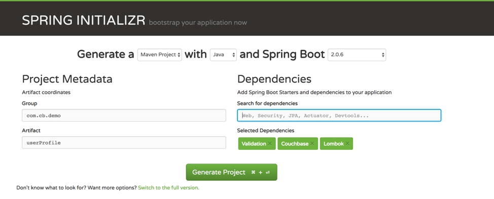
-
Click on "Generate Project"
-
Open the project on Intellij or Eclipse.
Now, we need to connect our new application to our database by defining the following configuration in the application.properties file:
spring.couchbase.bootstrap-hosts=localhost
spring.couchbase.bucket.name=user_profile
spring.couchbase.bucket.password=password
spring.data.couchbase.auto-index=trueThen, let’s create a simple entity called User:
@Data
@Document
public class UserEntity {
@Id
private String id;
@NotNull
@Size(max = 2, min=2)
private String countryCode;
@NotNull
private String username;
@NotNull
private String password;
}-
@Data: Lombok annotation responsible to generate getter and setters.
-
@Document: Couchbase annotation which defines that this entity is a top-level document
-
@Id: Spring Data annotation which defines the attribute called "id" as the document id.
Here is the respective repository for the entity that we just created:
@N1qlPrimaryIndexed
@N1qlSecondaryIndexed(indexName = "userEntity")
public interface UserEntityRepository extends CouchbasePagingAndSortingRepository<UserEntity, String> {
}-
As we are extending the CouchbaseRepository interface, an implementation of our UserEntityRepository class will be automatically generated during compile time.
-
The generated implementation will already contain methods like save, delete, findById, etc
-
Check out the documentation about each annotation here
Finally, let’s see our code in action:
@Autowired
private UserEntityRepository userEntityRepository;
public void doSomething() {
UserEntity user = new UserEntity();
user.setId("someId");
user.setCountryCode("DE");
user.setPassword("password");
user.setUsername("bilbo");
userEntityRepository.save(user);
//read after write
Optional<UserEntity> savedUser = userEntityRepository.findById(user.getId());
System.out.println(savedUser.get());
}The code above might look trivial for you, especially if you are coming from the relational world. But there is a lot going on under the hood:
-
Couchbase is automatically sharding the data, and this process is totally transparent for the developer.
-
You can read after write.
-
The document is automaticaly cached.
-
Operations like findById, save, delete and upsert, use internally the Key-Value Store Engine, which is, from a 10 000 feet view, a big distributed hash map. This kind of structure is fast for reads and writes and as Couchbase already has a totally transparent manage cache internally, you will get a very good performance without any extra effort.
Even though we haven’t written a lot of code yet, we already achieved 3 of our initial Non-functional requirements:
Querying the Database
Let’s first expand our example to something closer to the real world by adding a few extra attributes (firstName, middleName, lastName and securityRoles) and also a few entities (PreferenceEntity and AddressEntity) . Here is the respective code:
@Data
@Document
public class UserEntity {
@Id
private String id;
@NotNull
private String firstName;
private String middleName;
private String lastName;
private boolean enabled;
@NotNull
private Integer tenantId;
@NotNull
@Size(max = 2, min=2)
private String countryCode;
@NotNull
private String username;
@NotNull
private String password;
private String socialSecurityNumber;
private List<TelephoneEntity> telephones;
private List<PreferenceEntity> preferences;
private List<AddressEntity> addresses;
private List<String> securityRoles;
}Even though we added some new attributes, our coded has barely changed:
-
No extra annotations were added;
-
No change is needed in our UserEntityRepository;
-
Arrays and nested entities will be handled automatically by Couchbase
-
No need to implement a Lazy/Eager behavior. There is no extra cost on bringing the whole document other than the size of the document itself.
Here is how our current structure will look like on the database:
{
"_class" : "com.cb.demo.userProfile.model.UserEntity",
"firstName": "Denis",
"lastName": "Rosa",
"enabled": true,
"countryCode": "DE",
"username": "someUser",
"password": "letMeIn",
"securityRoles": ["USER", "ADMIN"],
"tenantId" : 4,
"preferences": [
{
"name": "lang",
"value": "en"
},
{
"name": "currency",
"value": "EUR"
}
],
"addresses": [
{
"name": "Home",
"street": "Marienplatz",
"number": "1",
"zipCode": "80913",
"city": "Munich",
"state": "Bayern",
"countryCode": "DE"
}
],
"telephones": [
{
"name": "cell",
"number": "111-222-3333"
}
]
}Couchbase has no concept similar to tables in an RDBMS, all documents are analogous. Therefore, if you need to differentiate documents, you will need to add a property which will work as a document type. Spring Data does it automatically for you by adding the attribute _class.
Couchbase has a SQL-like language called N1QL which you can use to query the database. However, you can also use the Spring Data SDK to make your code even simpler.
Spring Data allows you to easily query your database while reducing significantly the amount of code needed. You can retrieve data with it by simply naming your method according to Spring Data’s syntax.
@N1qlPrimaryIndexed
@N1qlSecondaryIndexed(indexName = "userEntity")
public interface UserEntityRepository extends CouchbasePagingAndSortingRepository<UserEntity, String> {
List<UserEntity> findByFirstNameIgnoreCase(String firstName);
List<UserEntity> findByTenantIdOrderByFirstNameAsc(Integer tenantId, Pageable pageable);
List<UserEntity> deleteByTenantId(Integer tenantId);
@Query("Select meta().id as id, username, tenantId, firstName, lastname from #{#n1ql.bucket} where #{#n1ql.filter} " +
" and tenantId = $1 order by firstName asc limit $3 offset $2 ")
List<SimpleUserVO> listTenantUsers(Integer tenantId, Integer offset, Integer limit);
@Query("#{#n1ql.selectEntity} where #{#n1ql.filter} and firstName like $1 and enabled = $2 and countryCode = $3 order by firstName desc limit $4 offset $5")
List<UserEntity> findActiveUsersByFirstName(String firstName, boolean enabled, String countryCode,
int limit, int offset);
}As you can see in the code above, you can query the database in two different ways: The Spring Data DSL or writing N1QL queries directly with the @Query annotation.
There are also in the second case few SpEL expressions, which are syntax-sugars to make the query smaller:
-
#{#n1ql.selectEntity} – Same as SELECT META(`b`).id AS _ID, META(`b`).cas AS _CAS,
b.* FROM ` bucketName` b -
#{#n1ql.filter} – Same as _class = "your_package.YourClassName"
You can check the documentation about SpEL syntax here.
You can also return Value Objects (VOs) instead of your main entity:
@Data
@ToString
@AllArgsConstructor
@NoArgsConstructor
public class SimpleUserVO implements Serializable {
private String id;
private Long tenantId;
private String firstName;
private String lastName;
private String username;
}And then, in our repository we can rewrite our method to return the SimpleUserVO class:
List<SimpleUserVO> findByTenantIdOrderByFirstNameAsc(Integer tenantId, Pageable pageable);Maximizing Schema Flexibility
Although we do not need to change anything in the database when we add a new attribute to our entity, in the example above the schema of your data is limited to the schema described in your class. Therefore, if you need to be even more flexible, the standard Couchbase Java SDK might be a better solution for you as it takes a more generic approach.
Now that you know how to query your user profile store, let’s revisit our list of non-functional requirements:
Searching Users with Full-Text Search
One of the important requirements in a User profile Store is to quickly search for a user or to quickly search through all the history of interactions with him. This feature could enable, for instance, a better post-sales experience in retail or a more accessible patient history in a health care system.
For many years developers have been using pure SQL to implement these types of functionalities. However, this type of technology has proven to be inefficient to deal with language nuances and limited in terms of performance.
Searching for people’s name, for instance, is a tricky scenario, where the same name might have dozens of variations. In this session, let’s try to solve this issue by enhancing our users listing using Couchbase Full-Text Search on it. The goal is to implement a simple search that is able to return users called Allex or Alec when we search for Alex.
The first step is to create a Full-Text Search index via Search → Add Index, with the following parameters:
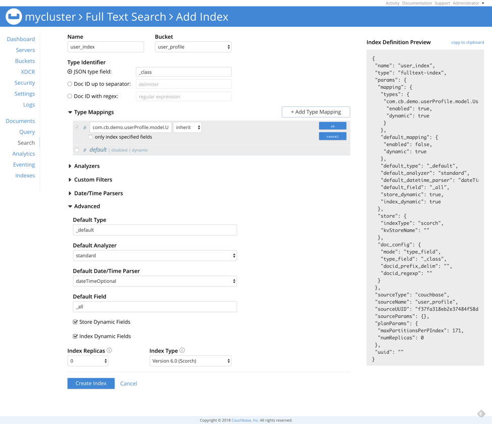
-
Name: the name of the index;
-
Bucket: The target bucket where your documents are stored;
-
JSON type field: As we are using Spring Data, our object type is the attribute called "_class"
-
Advanced → Store Dynamic Fields: Let’s also store our documents in the index.
|
Creating a primary index is easy, but is not recommended for production. Creating the right indexes can be difficult. If you are having trouble creating the right index, here are two paths you can take to get help:
|
Click on your index, type "Alex" and hit Search to check if your index was created correctly:
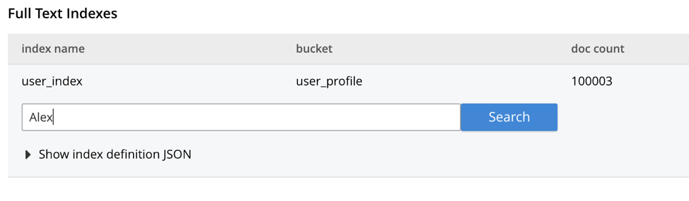
The results should be similar to the following:
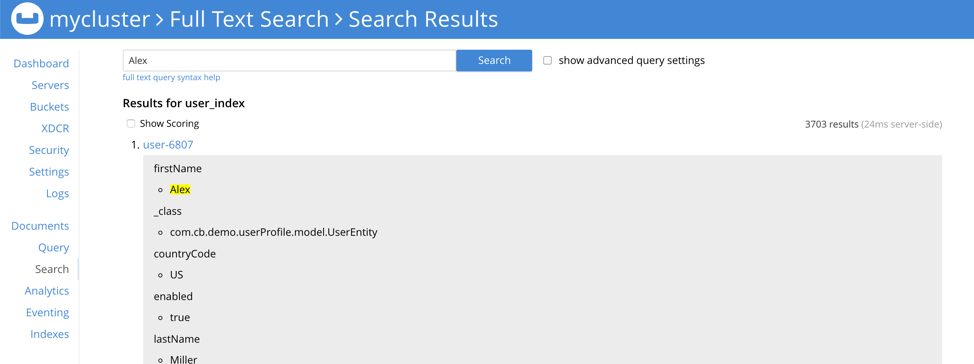
You can read more about how to index only specific fields here.
Now that we already have our index in place, let’s see how we can make the same US users query using Couchbase FTS Engine:
@Override
public List<SimpleUserVO> ftsListActiveUsers(String firstName, boolean enabled, String countryCode, Integer limit, Integer skip ) {
String indexName = "user_index";
MatchQuery firstNameFuzzy = SearchQuery.match(firstName).fuzziness(1).field("firstName");
MatchQuery firstNameSimple = SearchQuery.match(firstName).field("firstName");
DisjunctionQuery nameQuery = SearchQuery.disjuncts(firstNameSimple, firstNameFuzzy);
BooleanFieldQuery isEnabled = SearchQuery.booleanField(enabled).field("enabled");
MatchQuery countryFilter = SearchQuery.match(countryCode).field("countryCode");
ConjunctionQuery conj = SearchQuery.conjuncts(nameQuery, isEnabled, countryFilter);
SearchQueryResult result = userEntityRepository.getCouchbaseOperations().getCouchbaseBucket().query(
new SearchQuery(indexName, conj)
.fields("id", "tenantId", "firstName", "lastName", "username" )
.skip(skip)
.limit(limit));
List<SimpleUserVO> simpleUsers = new ArrayList<>();
if (result != null && result.errors().isEmpty()) {
Iterator<SearchQueryRow> resultIterator = result.iterator();
while (resultIterator.hasNext()) {
SearchQueryRow row = resultIterator.next();
Map<String, String> fields = row.fields();
simpleUsers.add(new SimpleUserVO(
row.id(),
new Long(fields.get("tenantId")),
fields.get("firstName"),
fields.get("lastName"),
fields.get("username")
));
}
}
return simpleUsers;
}In the code above, we start by creating a disjunction query using the user’s first name. The disjunction query is something similar to an "OR" operator in SQL.
MatchQuery firstNameFuzzy = SearchQuery.match(firstName).fuzziness(1).field("firstName");
MatchQuery firstNameSimple = SearchQuery.match(firstName).field("firstName");
DisjunctionQuery nameQuery = SearchQuery.disjuncts(firstNameSimple, firstNameFuzzy);Note that firstNameSimple is an exact match of the target term, and firstNameFuzzy allows a match with a levenshtein distance of 1. As an exact match will score higher than a fuzzy match, a combination of those two will allow you bring the exact matches first.
Then, we filter by country and if the user is active:
BooleanFieldQuery isEnabled = SearchQuery.booleanField(enabled).field("enabled");
MatchQuery countryFilter = SearchQuery.match(countryCode).field("countryCode");And join all filters using a conjunction query, something similar to an "AND" operator in SQL.
ConjunctionQuery conj = SearchQuery.conjuncts(nameQuery, isEnabled, countryFilter);Finally, we execute the query specifying which fields we want to be returned and parse the result:
SearchQueryResult result = userEntityRepository.getCouchbaseOperations().getCouchbaseBucket().query(
new SearchQuery(indexName, conj)
.fields("id", "tenantId", "firstName", "lastName", "username" )
.skip(skip)
.limit(limit));
List<SimpleUserVO> simpleUsers = new ArrayList<>();
if (result != null && result.errors().isEmpty()) {
Iterator<SearchQueryRow> resultIterator = result.iterator();
while (resultIterator.hasNext()) {
SearchQueryRow row = resultIterator.next();
Map<String, String> fields = row.fields();
simpleUsers.add(new SimpleUserVO(
row.id(),
new Long(fields.get("tenantId")),
fields.get("firstName"),
fields.get("lastName"),
fields.get("username")
));
}
}
return simpleUsers;For instance, a search for the term Alex would return a result similar to the following:
SimpleUserVO(id=user-7, tenantId=1, firstName=Alex, lastName=Davis, username=user7)
SimpleUserVO(id=user-23, tenantId=1, firstName=Alex, lastName=Williams, username=user23)
SimpleUserVO(id=user-11, tenantId=1, firstName=Alex, lastName=Smith, username=user11)
SimpleUserVO(id=user-47, tenantId=1, firstName=Alex, lastName=Garcia, username=user47)
SimpleUserVO(id=user-10, tenantId=1, firstName=Alec, lastName=Jones, username=user10)
SimpleUserVO(id=user-17, tenantId=1, firstName=Alec, lastName=Jones, username=user17)
SimpleUserVO(id=user-116, tenantId=1, firstName=Alec, lastName=Miller, username=user116)
SimpleUserVO(id=user-39, tenantId=1, firstName=Alec, lastName=Smith, username=user39)
SimpleUserVO(id=user-90, tenantId=1, firstName=Alec, lastName=Martinez, username=user90)
SimpleUserVO(id=user-135, tenantId=1, firstName=Alec, lastName=Lopez, username=user135)
SimpleUserVO(id=user-181, tenantId=1, firstName=Alec, lastName=Davis, username=user181)
SimpleUserVO(id=user-21, tenantId=1, firstName=Allex, lastName=Gonzalez, username=user21)
SimpleUserVO(id=user-28, tenantId=1, firstName=Allex, lastName=Johnson, username=user28)
SimpleUserVO(id=user-1, tenantId=1, firstName=Allex, lastName=Garcia, username=user1)
SimpleUserVO(id=user-109, tenantId=1, firstName=Allex, lastName=Hernandez, username=user109)
SimpleUserVO(id=user-70, tenantId=1, firstName=Allex, lastName=Hernandez, username=user70)
SimpleUserVO(id=user-97, tenantId=1, firstName=Allex, lastName=Rodriguez, username=user97)The users will be automatically sorted by their score, but you can still sort the results by a specific field if needed.
Couchbase Full-Text Search should be the primary choice whenever you need to search for complex strings or any type of fuzzy matching. You can read more about it here.
Lastly, let’s add a new item to our list of non-functional requirements:
Storing User Events
So far, in our User Profile Store, we discussed about how to store basic data about our users without targeting any specific scenario. Just as a quick exercise, let’s imagine what else we could store in our application according to each use case:
Finance
-
User’s transactions history
Even though the requirements of a User Profile Store might be very specific for each vertical, they all can benefit from a common use case: storing user events.
Events are essential to understand how the user behaves and might feed several AI/Analytics systems to build predictions or recommendations. However, it will usually demand a high write/read throughput architecture.
One of well-known strategies to improve throughput of a system is to use a non-blocking programming approach. As Couchbase itself was internally designed to be reactive, you can develop a true end-to-end non-blocking system.
Both Java and Spring SDK can be used reactively, the main difference between these two is that the Spring Data works with both Reactor and RxJava, while the Java SDK is designed to use RxJava only.
If you are not familiar with reactive programming, I highly recommend you to check this out first.
Let’s start by adding two new dependencies to our repository: rxjava-reactive-streams and spring-boot-starter-webflux.
<dependency>
<groupId>org.springframework.boot</groupId>
<artifactId>spring-boot-starter-webflux</artifactId>
</dependency>
<dependency>
<groupId>io.reactivex</groupId>
<artifactId>rxjava-reactive-streams</artifactId>
<version>1.2.1</version>
</dependency>Then, let’s enable reactive repositories with the annotation @EnableReactiveCouchbaseRepositories:
@SpringBootApplication
@EnableReactiveCouchbaseRepositories
public class UserProfileApplication {
public static void main(String[] args) {
SpringApplication.run(UserProfileApplication.class, args);
}
}Now we create our reactive repository by extending the ReactiveCouchbaseSortingRepository class:
public interface ReactiveUserEventRepository extends ReactiveCouchbaseSortingRepository<UserEventEntity, String> {
}As you might guess, this repository already contains by default the save, delete, get, and many other methods. However, they return Flux<T> and Mono<T> instead of returning directly your entity type.
Mono and Flux are the two main return types when you are working with reactor (the reactive library chosen by Spring Webflux). In a rough summary, Flux allows you to emit zero or more items while Mono can only emit one item at the most.
In our small use case, we will only need two methods:
-
addEvents: Store new events reactively. No repository changes needed, as the save method is already provided.
-
findLatestUserEvents: Return the latest N events by type.
public interface ReactiveUserEventRepository extends ReactiveCouchbaseSortingRepository<UserEventEntity, String> {
@Query("#{#n1ql.selectEntity} where #{#n1ql.filter} and userId = $1 and eventType = $2 order by createdDate desc limit $3 offset $4")
Flux<UserEventEntity> findLatestUserEvents(String userId, String eventType, int limit, int offset);
}We can now define a class called UserEventServiceImpl which will be responsible for connecting our repositories with the controller layer:
@Service
public class UserEventServiceImpl implements UserEventService {
@Autowired
private ReactiveUserEventRepository reactiveUserEventRepository;
@Override
public Flux<UserEventEntity> save(List<UserEventEntity> events){
return reactiveUserEventRepository.saveAll(events);
}
@Override
public Flux<UserEventEntity> findLatestUserEvents(String userId, String eventType, int limit, int offset) {
return reactiveUserEventRepository.findLatestUserEvents(userId, eventType, limit, offset);
}
}Now, if you also want to create a reactive rest endpoint, all you need to do is to define a controller returning your Mono/Flux result:
@RestController("/events")
public class UserEventController {
@Autowired
private UserEventService userEventService;
@PostMapping(value="/add", produces = MediaType.TEXT_EVENT_STREAM_VALUE)
public Flux<UserEventEntity> save(@Valid @RequestBody List<UserEventEntity> events) {
return userEventService.save(events);
}
@GetMapping(value="/findLatest", produces = MediaType.TEXT_EVENT_STREAM_VALUE)
public Flux<UserEventEntity> findLatestUserEvents(@RequestParam("userId") String userId,
@RequestParam("eventType") String eventType,
@RequestParam("limit") int limit,
@RequestParam("offset") int offset) {
return userEventService.findLatestUserEvents(userId, eventType, limit, offset);
}
}With the event-driven architecture we have explained in this session, your application won’t need to wait for a response from the database. This approach can improve significantly your read/write throughput at scale.
| For more on User Events, read the Querying Time-Series data in Couchbase with Window Functions which uses some features only available starting in Couchbase Server 6.5. |
How to configure Cross Data Center Replication (XDCR)
Cross Data Center Replication is one of the most appealing features in Couchbase, with it you can easily distribute and replicate your data globally using a secure and reliable protocols that can be paused and resumed at any time.
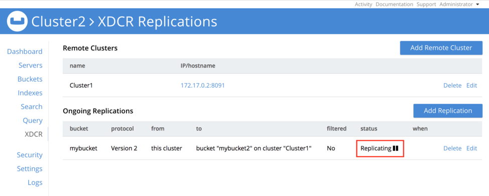
XDCR supports replication between clusters of different sizes, and it is configured on the bucket level (between buckets of two or more clusters). You can also configure the direction of the replication.
In our User Profile Store example, we will have 2 datacenters: one in the US and the other in Europe. Therefore, if a user living in the USA travels to Europe, he will connect to our European Datacenter.
The user should be able to log in and access his profile, but we won’t leverage his previous events/recommendations, as EU is a different market with different products, regulations, taxes, currencies, etc.
In practice, we will need to replicate only the UserEntity to achieve this behavior. the rest of entities will be local to each cluster. To simulate this scenario, we will use two Couchbase instances, one running local and the second on docker, here is how to set up them:
-
Let’s start by setting up a second Couchbase instance. Feel free to choose where you want to run it, but the two machines should be able to talk to each other.
-
Once you have created your new instance, go to Buckets→ ADD BUCKET, and then create a new bucket called user_profile

-
Now let’s connect our EU cluster with our US one. Click on XDCR→ Add Remote Cluster:
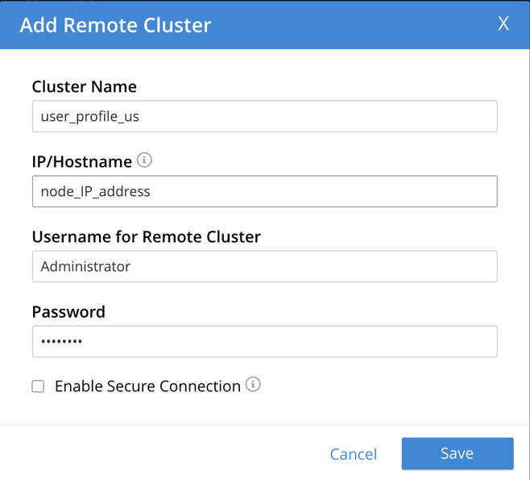
-
Cluster Name: Name of the cluster you are connecting to
-
IP/Hostname: IP address of one of the nodes of the remote cluster
-
Username/Password: username and password of the remote cluster
-
Click on XDCR → Add Replication, and fill out the form like the following:
-
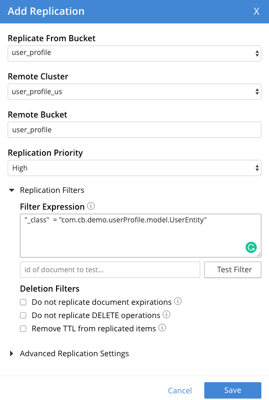
Note that we have checked the option Enable advanced filtering. It will allow you to filter which documents should be replicated. Since Couchbase 6.5 you can filter documents using multiple attributes of your document using a syntax very similar to N1QL. You can read more about it here
In the case above, only documents with the attribute _class equals to com.cb.demo.userProfile.model.UserEntity will be replicated. As in our User Profile store, only the UserEntity has this prefix, it will be the only document type which will be replicated to other clusters.
The final result should be similar to the following:

The replication will start automatically and in a few seconds you will be able to see documents appearing in the EU Cluster:
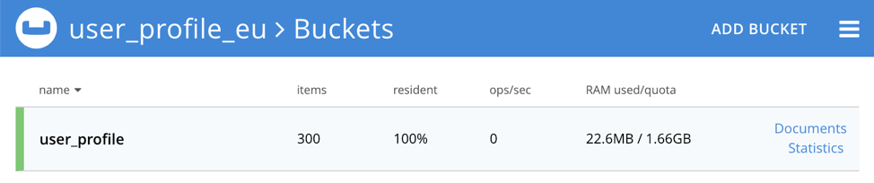
As we are filtering which documents should be replicated between clusters, the total number of documents will be different in both clusters:
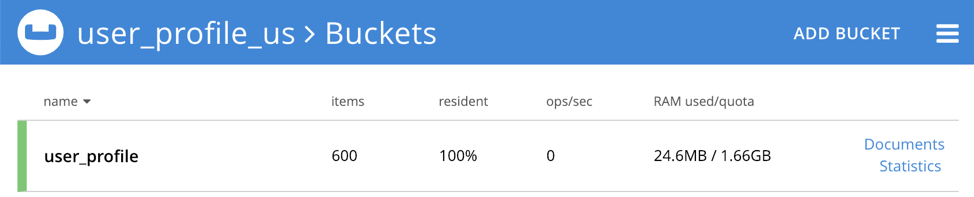
Configuring Bidirectional Replication
In our current scenario, EU users also should be replicated to US. It will require us to do nearly the same configuration in our US cluster, but this time pointing the replication to the EU Cluster.
As you might already guess, we need to first register our EU Cluster in our US Cluster:
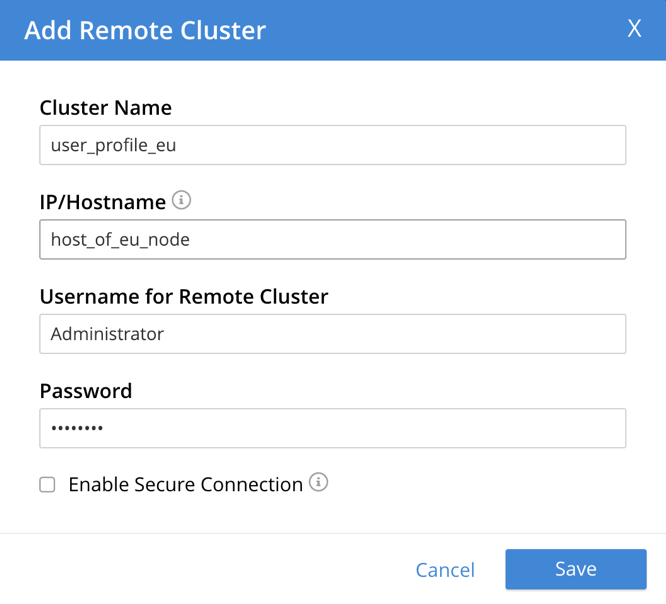
Finally, we can add the replication from EU to US:
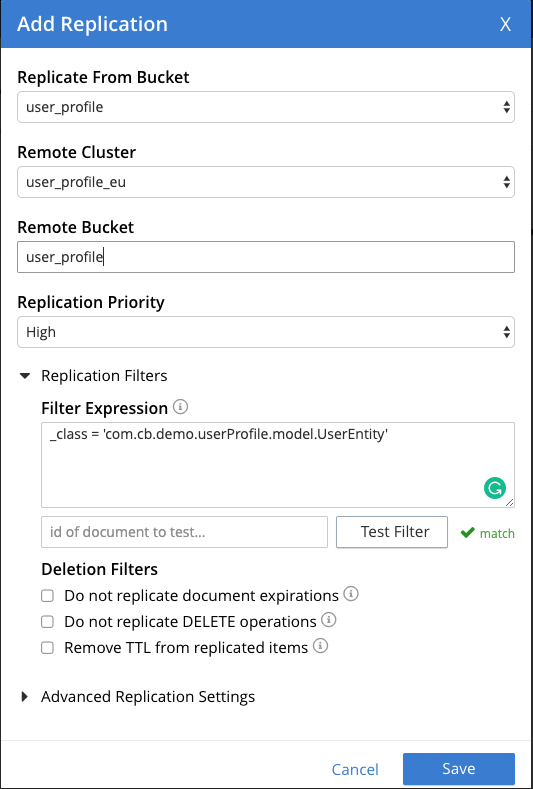
Here is how your replication should look like:

Disaster Recovery with XDCR
XDCR is also commonly used in disaster recovery plans (DRP). In this scenario, all you need to do is to set up a new Couchbase cluster in your DRP environment, then create a replication from your maib cluster to your DRP. On the top of it, you could still use the multi-cluster aware (MCA) SDK which can automatically redirect traffic to a different cluster according to a set of rules.
With XDCR, the MCA SDK and all Couchbase internal features, like replication and AutoFailover, we can update our list of non-functional requirements: